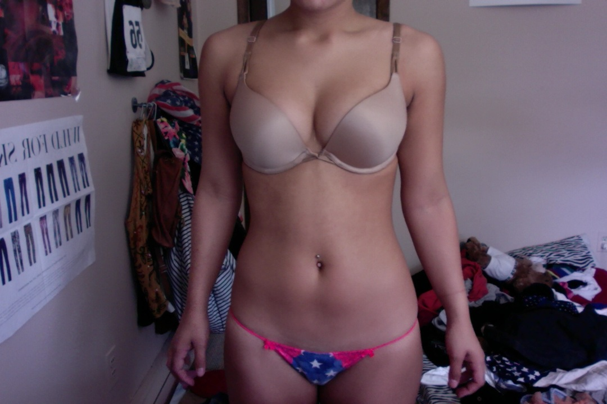
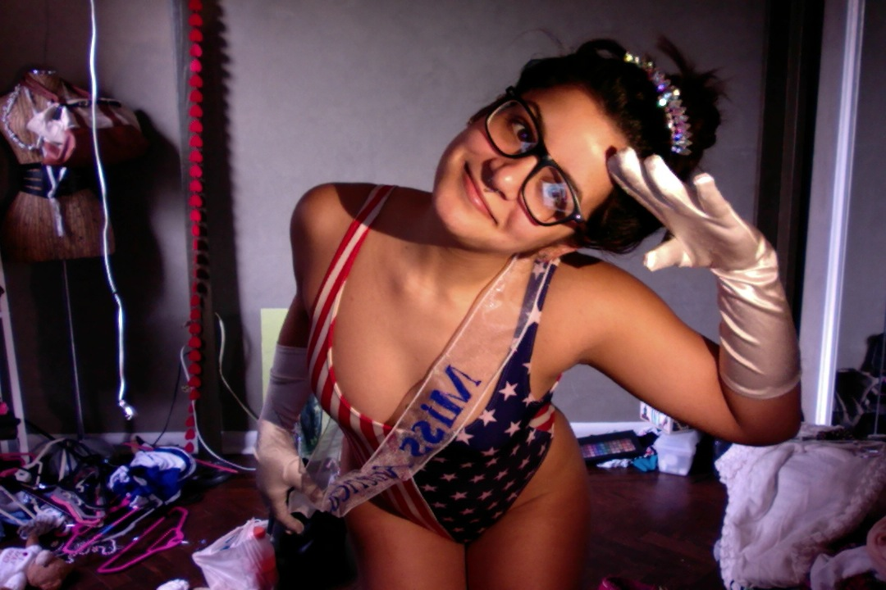

How gaining 15 pounds made me love my body

Growing up, I always had weight issues. Weight insecurity stems from various places, depending on the individual, for me, it came from my family, more specifically my father's side of the family. I'm Puerto Rican, Dominican, and Cuban. My mother's side tends to be heavier set, while my father's side tends to be slender. Growing up, the people around me rarely put emphasis on weight, it was almost as if they failed to acknowledge it, until one day.
The second grade was a pivotal year for me. I fell in love with technology, joined the choir, won the hearts of all the cool third grade girls with my Backstreet Boy t-shirt, and I visited my grandparents in Florida. During that visit I went to both Disney and Sea World. You could pretty much say my life was peaking and I was ecstatic.
One day, I was getting ready to swim with my cousin Melissa, and that's when it hit me. Weight was an issue, it was a thing that society acknowledged. My cousin compared our bodies while we took turns sticking our toes into the cool water, frightened to jump in first. She was 'tall' while I was 'short.' I was 'fat' and she was 'skinny.' I was confused by this. I could tell by the tone of her voice that I was supposed to feel hurt by this. Anyone who knows me understands that intentional, negative judgement and criticism does not phase me. So her words went in one ear and out the other.
This issue surfaced again the following summer. I was at a family friend's house getting ready to swim in their pool when my father came over to me and gave me advice on how to develop and maintain a flat stomach. Confused, I sat by the pool kicking my legs in the water and looked up at the sky. I played with my 'rolls' and filled with excitement because I now had the hidden secret to fix my body.
That fall, my mother signed me up for a local basketball league. This helped me maintain my weight, but also introduced me to other beauty standards. I suddenly discovered I had 'muscular' legs. This always confused me, as, to me, my legs looked 'normal.' They were just two short legs. But I eventually shrugged this off.
It was ninth grade math class and I was dozing off. I headed to the bathroom to get my blood pumping to wake me up. When I sat back at my desk, my friend Sara complimented me on my muscular legs. She had good intentions, I know this. But later that day I analyzed my legs before track practice and realized -- my ass looked huge and my legs.. oh gosh.. they looked like tree trunks in my black and white polka dotted leggings. That was the last time I wore those leggings.
I continued to run track in high school. Although I loved my body, I just felt it was average. For someone who ran five or more miles a day, I felt I lacked the body of a runner, as I was more 'bulky.' Eventually I learned that I have what they call, an athletic body. During my junior year, I started to value nutrition and weight training more. This was all due to one of my favorite gym teachers ever, Mr. Sagel. I weight trained in gym class every other day on top of my workouts. I started to feel slender and stronger.
That same year while I was working out, I remember one of my senior teammates came up to me in the training room and told me that I looked like I had lost some weight. I thanked her and finally stepped on a scale. She was right! I was down to 107 pounds, not my usual 115. I continued running and eventually earned a full ride to a private college in Ohio. I accepted the offer and almost immediately regretted it. Honestly, I have so much respect for student athletes. I couldn't do it. My mind would race and I would start to feel depressed due to the lack of time I could devote to my passion -- art.
I transferred colleges, stopped running, and needless to say, gained weight. I was ashamed to be seen by people I knew in high school due to their higher standards of my body. The funny thing was, I didn't really mind my body. I finally had boobs! I was now 130 pounds and obviously no longer the track star everyone knew and loved, but I loved myself, I loved my body. I knew I had to spread this message.
Gaining 15 pounds after high school made me love my body.
I developed boobs and along came other things, hips! I suddenly found myself staring at myself in the mirror excited about my 'curvaceous' body. I am now roughly 122 pounds and can honestly say that gaining 15 pounds after high school made me love my body. I think it's really important that as both men and women, we acknowledge that our bodies change. I was a child when I was in high school, with a child body. I am now a responsible adult, with a woman's body. What makes us who we are and what makes us sexy is change. We must acknowledge this.

Body peace, self confidence, and happiness are some of the values I stand for. That's what The Long Islander is about, happiness and finding yourself. I hope you look forward to reading more about my journey and I look forward to learning more about yours.
How do you come to terms with your body? What makes you self conscious? How do you find body peace? Comment below!
Special thanks to Jenn for editing this. Check out her blog Uncensored Persona! She speaks some truth.